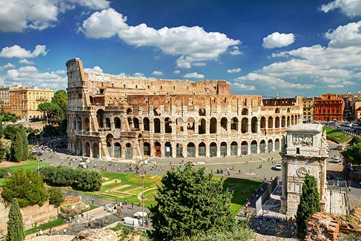

| banner |
| home | contact us | produser | about us |
|
link yahoo github gmail gradient |

The Colosseum or Coliseum, also known as the Flavian Amphitheatre, is an oval amphitheatre in the centre of the city of Rome, Italy. Built of travertine, tuff, and brick-faced concrete, it is the largest amphitheatre ever built. The Colosseum is situated just east of the Roman Forum ok |

Florence Cathedral, formally the Cattedrale di Santa Maria del Fiore, is the cathedral of Florence, Italy. It was begun in 1296 in the Gothic style to a design of Arnolfo di Cambio and was structurally completed by 1436, with the dome designed by Filippo Brunelleschi. ok |

The Leaning Tower of Pisa or simply the Tower of Pisa is the campanile, or freestanding bell tower, of the cathedral of the Italian city of Pisa, known worldwide for its nearly four-degree lean, the result of an unstable foundation. ok |